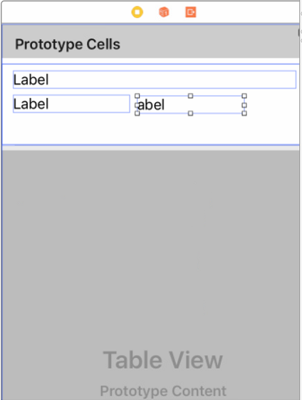
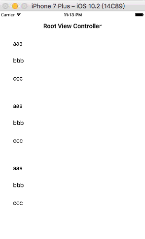

甚麼是json
資料交換格式
在日常生活中，人與人之間的交流需要彼此都聽得懂得語言。
語言有其規則名詞接著動詞是一種意思，反過來又是一種意思，
例如 我打 VS 打我 意義就不一樣，所以兩個人溝通必須要有相同的規則，才能搞對意思
同樣的，在計算機的不同程式之間，或者不同的程式語言之間進行交換資料，
也需要一種大家都能聽得懂得‘語言’，例如前面10個字是名字，然後是性別，生日等等
兩隻程式都都知道規則就能正確交換資料，而這個規則就是資料交換格式，以特定的形式來進行描述資料。
- XML（eXtensible Markup Language）
- JSON（JavaScript Object Notation） 使用key:value → ＂name":"John" 方式來描述資料
可擴充套件標記語言，標準通用標記語言的子集，是一種用於標記電子檔案使其具有結構性的標記語言。
例如使用name標籤來定義名字 →〈name〉JSON〈／name〉
JSON格式解說
JSON（JavaScript Object Notation）是一種常用的資料交換格式 。
另一種常見的資料交換格式式XML，XML很像HTML 以各種不同的標籤標示資料，只是XML標籤是自定義的，例如<STUDENT><NAME>川普</NAME> <ID>10414001</ID></STUDENT>
做為資料交換的發送端把每一筆資料按照協商好的標籤 標註起來，
然後把資料送到接收端，接收端也看得懂標籤的意義，所以利用標簽正確取出資料。
所以這是一種資料交換格式。
而JSON也是一樣，也是一種資料交換格式。
JSON全名叫做JavaScript Object Notation
JSON格式他和XML不一樣，不是使用標籤，而是使用兩種符號 {}和[]來表示兩種電腦科學常用的資料格式物件和陣列
物件(object)用大括號 { }
陣列(array)用中括號 [ ]
這樣的好處是可以接收到可以直接吻合程式中的資料結構，不用相XML都是一個一個的無組織資料必須自己在整理一次，而在發送端也式可以使用程式中的陣列 變成JSON格式發送
所以最近JSON被當作資料交換格式來傳輸的比率越來越高
物件(object) {"subject":"Math","score":80}
這就是json裡的object
key-value就是指一個鍵值(key)對應一個值(value)，
像是subject這個key有值叫Math
score它的值為80
這裡注意一點
json object的鍵值(key)，一定要用文字做鍵值
以下是錯誤的
{0:"Tom", 1:"John", 2:"Amy", 3:"Ivy"} // error syntax
正確應改為
{"0":"Tom", "1":"John", "2":"Amy", "3":"Ivy"}
練習一和二的說明
接下來 做兩個練習
1 打開一個jSON file檔案 解析後 放到tableview顯示
2 去遠端伺服器呼叫web service 將傳回來的json資料解析顯示在tableview

第一個練習 會寫兩個程式 自本地端讀JSON檔 解析JSON格式 顯示到頁面
jsonParsingFromFile() 和 startParsing(data :NSData)
jsonParsingFromFile()讀取本地端的JSON檔，然後放到NSDATA裡面去，NSDATA(無格式的一團資料)
然後再把NSDATA放到 startParsing(data :NSData)去解析出JSON格式 取出資料顯示到那三個標籤
第二個練習 會寫兩個程式 自遠端讀JSON資料 解析JSON格式 顯示到頁面
在遠端讀取的JSON資料並不是以檔案方式被傳送，而是像網頁一樣，用HTTP 協定傳送
jsonParsingFromURL () 和 startParsing(data :NSData)
jsonParsingFromURL ()讀取遠端的JSON資料，然後放到NSDATA裡面去，NSDATA式無格式的一堆資料
然後再把NSDATA放到 startParsing(data :NSData)去解析出JSON格式 取出資料顯示到那三個標籤
兩個練習只是來源不同，當得到資料都是放成NSDATA(無格式的一團資料)，丟到startParsing(data :NSData)去處理
所以兩個練習只差前面讀資料程式
練習的環境準備
一 建立一個tableview
建立一個TableView如下

執行應該出現，只要三筆資料即可

練習一、從一個本地端的JSON file讀取資料放到那三個Label中
- 一個JSON格式包含兩種可能性 {} 和 []，端看JSON資料第一個字元是 [ 或者 { 來決定，
- json不可能有其他開頭的字元例如《 空白{＂name＂,"John"} 》， 前面多一個空白就會出錯
- 如果第一個字元是 {，則整體是一個物件，所以你必須使用一個NSDictionary的變數來承接
- 如果第一個字元是 [，則整體是一個陣列，所以你必須使用一個NSArray的變數來承接
所以我們把《練習一》切成兩個部分
1 json是一個物件，{＂name＂,"John" }
讀取時用要NSDictionary的變數來裝
2 json是一個陣列包很多個物件。 這個是陣列裡面包三個物件 [ {＂name＂,"John"}, {＂name＂,"Mary"}, {＂name＂,"Yaml"} ]
讀取時要用一個NSArray來裝，再用for迴圈一個一個取出物件
練習一之1、JSON格式是一個物件{ }
- 先拉ttt1.json進去專案，test1.json長這樣
- 讀檔程式 從test1.json讀到data裡面
- 把data放到startParsing去套用JSON格式，並且把資料放到陣列，然後驅動tableview重載
- tableView重載，讀取陣列資料
path = Bundle.main.path可以將app在手機上的檔案路徑轉成字串放到path
而let data : NSData = try! NSData(contentsOfFile: path as String....
則讀取檔案放到data，data是NSData格式，NSData就是一團無格式資料，
像讀影像讀文字檔等等都是先讀到NSData，再套用格式到這團資料上去
number of row 一樣是陣列長度
cell for row 一樣從陣列塞資料進去tableView